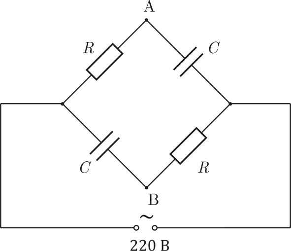

Y14 (2014) — English translation
An electrical circuit consisting of two identical capacitors $10~\text{мкФ}$ and two resistors $1~\text{кОм}$ is connected to an alternating voltage source $220 В$, $50 Гц$.

A wattmeter is a device that at each moment of time measures the voltage on one of its windings and the current through the other, after which it multiplies them and averages the resulting power over a large time interval.
Source: https://pho.rs/p/3967